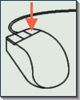

Les Menus déroulants de XFCE procurent une manière facile de démarrer les autres applications UNIX.
1) Ouvrir un menu déroulant
Pour ouvrir un menu, il suffit de cliquer sur un des boutons munis d'une
flèche vers le haut  ,
sur la barre principale :
,
sur la barre principale :
 |
|
Cela ouvrira une fenêtre séparée pour ce menu, et celui-ci restera ouvert même après avoir sélectionner un item.
2) Selectionner une entrée
Pour sélectionner une entrée, il suffit de cliquer sur le label correspondant :

3) Ajouter une nouvelle entrée à un menu
Cliquez sur "Ajouter une icône..." en haut du menu.
Cela ouvrira la boîte de dialogue suivante, décrite en
détail dans la section "Ajouter/changer
les entrées de menu"

|  | Pour modifier une icône ou y associer une commande, cliquer
sur l'entrée correspondante avec le bouton droit de la souris. Cela
ouvrira une boîte de dialogue similaire qui permettra de de changer
les paramètres désirés. Cf. la section "Ajouter/changer
les entrées de menu" pour plus de détails.
|